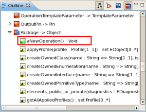

It is possible to write Kermeta code using a simplified Aspect Oriented approach.
Technically, you can declare classes as "aspects" that will contribute features (attributes, references, properties, operations, constraints) to an existing class. In such situation, the definition of two classes that have the same qualified name will be merged into a single class in the interpreter memory.
This is a great help when you want to separate the concerns into several files. For example, you may have one file that strictly conforms to the structural part of your metamodel, one file containing the constraints for a given purpose and another file containing the operation and special extension to the metamodel for an interpreter.
Obviously, the merge will be successful only if there is no conflict between all the declared features.
|
|
Important |
|---|---|
|
Since this feature is really successful and very well accepted, the surface syntax will change in the future release v1.0.0 in order to use a dedicated keyword instead of a simple annotation. The syntax presented here is valid only for prior versions. |
The merge is driven by the qualified name of the element to merge. Two classes will be merged if they have exactly the same qualified name (packages names + class name)
In order to keep the compatibility with previous behaviour, the merge is allowed only if you add some tags:
is placed on a class, it indicates that this class is an aspect of another one. This allows to complement a class with the features of the aspect class.
is placed on an operation, it indicates that the body of the operation can be overloaded by another definition of the same operation in an aspect class. This is useful in some situation were the code expect to be overloaded.
|
|
Note |
|---|---|
|
When using overloadable tag, for a given set of definition, the operation that is not tagged overlodable will overload all other definitions. If all the declarations declare to be overloadable, then the declaration order is important. The last declared will be used by the interpreter. |
package
uml;
require
kermeta
require
"platform:/plugin/org.eclipse.uml2.uml/model/UML.ecore"
}
class
Package
{
}
From now, all stuff you will add to this class will be added to the UML2 Package class.
As an example, you may add a aNewOperation() method:
end
}
After that, you can see this operation inserted into the UML2 Package element in the Kermeta outline:
As you can see, the outline icon for the UML2 Package has changed and informs you this element is partly redefined by current Kermeta file.

Using the same way, you can add new properties on-the-fly to a write-only metamodel, in order to handle specific behavior or processes on its models:
attribute
anotherNonUmlProperty : kermeta::standard::String
}
All those « aspect » features will help you challenge the tutorial main work, which is the realization of the UML2 -> FSM transformation